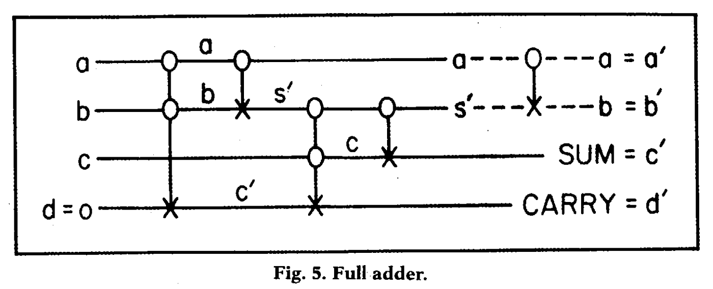

量子コンピュータの世界ではまだ、Python や Java のような高水準言語は登場していません。 このため、量子プログラミングでは、今後しばらくはアセンブラ命令のような低水準言語を使っていく必要があります。 低水準言語では、ビットレベルでの演算を積み重ねることでプログラム全体を記述します。 このため高水準言語よりも生産性が低く、またビット単位での操作を熟知している必要があります。
初心者にとってひとつラッキーな点は、量子コンピュータの低水準言語は取っ付きやすい見た目であることです。
というのも、量子コンピュータの歴史の最初期に、量子コンピュータの提唱者の一人であるファインマンが量子プログラムを図式として表現する記法を発明したからです。{%
margin_note %}

ファインマンが量子コンピュータを提唱した最初の論文 (1986 年)
に掲載されている図の抜粋。ここで使われている記法は、現在使われている記法とほとんど変わっていません。Richard
P. Feynman,
Quantum mechanical computers
(1986){% endmargin_note %} この記法は、従来の MOV や
ADD といった文字だけの無骨なアセンブラ命令と比べると、
グラフィカルで構造を把握しやすく、また楽譜のような美しささえあります。
このように量子プログラムを図式として表したものを量子回路と呼びます。 量子回路は水平方向に伸びる何本かの線 (ワイヤ) と、ワイヤ上に置かれた QPU 命令から構成されます。 それぞれのワイヤは、量子ビット 1 つに対応します。つまり、8 量子ビットを使用する量子回路は 8 本のワイヤを持ちます。 量子回路は楽譜と同じく、一番左の列から右に向かって実行されます。 ワイヤ上に置かれた QPU 命令が各量子ビットに対して演算を行います。
現在では、どんな量子コンピュータでも使える標準的な命令セットと、それぞれを表す記号 (アイコン) がほぼ決まっています。 代表的な基本 QPU 命令を表にリストアップしました。 詳細は後に説明するとして、どんな命令があるかまずはざっと眺めておきましょう。
| 記号 | 名前 | 説明 |
|---|---|---|
|
|
NOT または X | ビットペアの入れ替え |
|
|
H または Hadamard (アダマール) | シンプルな重ね合わせの作成 |
|
|
Phase Shift (位相シフト) | 相対位相を回転 |
|
|
WRITE | 指定した値で量子ビットを初期化する |
|
|
MEASUREMENT (測定) |
量子ビットを測定し 0 または 1 を返す
|
|
|
CNOT | 条件付き NOT |
|
|
CCNOT または Toffoli (トフォリ) | 条件2個付き NOT |
|
|
CPHASE | 条件付きの Phase Shift |
|
|
CZ | CPHASE (π 回転) |
|
|
SWAP | 2 つの量子ビットを交換 |
|
|
CSWAP | 条件付き SWAP |